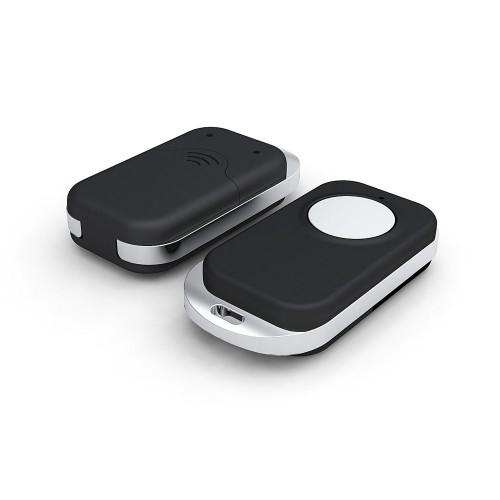
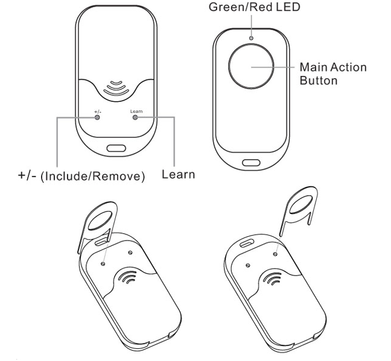

Aeon Labs Panic Button Z-Wave¶

How to add to VENUS app¶

- Adding/Removing
- Press “Add button” (button ‘+’) in app
- Using the a pin, press the Learn button on the Panic Button. Its green light will begin to pulse.
- Wait for VENUS scan & detect this device and inform in app
How to add/remove device(s) to private Z-Wave network¶
Key Fob has been designed with the ability to add Z-Wave devices to its network.
- Using a pin, Press the ‘+/-‘ button. Your Panic Button’s green light will pulse.
- Press the Z-Wave network button on the device that you wish to add.
- Once the device has been included, the green light on the Panic Button will stay lit for 2 seconds, and then blink again. If device included unsuccessful, the red light on the Panic Button will stay lit for 2 seconds, then the green light blink again.
- Once you’re finished, press any button on your Key Fob to exit this mode.
To remove device from private Z-Wave network:
- Using a pin, Press the ‘+/-‘ button. Your Panic Button’s red light will pulse.
- Press the Z-Wave button on the device that you wish to remove.
- Once the device has been removed from the network, the green light on your Panic Button will stay lit for 2 seconds then the red light blink again. If remove unsuccessful, the red light will stay lit for 2 seconds, then blink again.
Configuration description¶
None
Factory reset¶
- Using 2 pins, press and hold the ‘learn’ and ‘+/-‘ buttons 10 seconds.
- The green light alternates red light 10 seconds on the front of your remote, then the green light will stay solid for 2 seconds if successful.